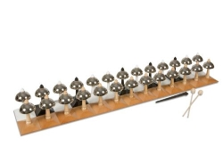
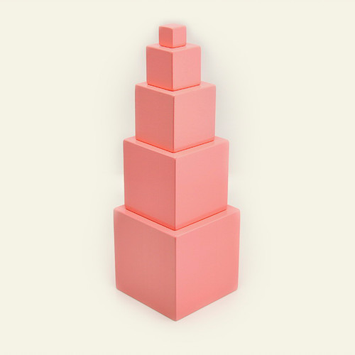
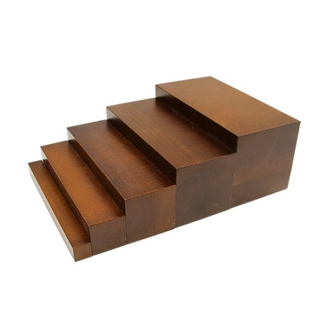
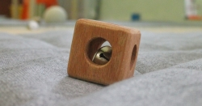
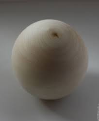
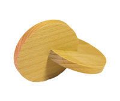

Монтессори колокольчики – монтессори материал премиум класса. Производство Нидерланды.
(Heutink International) Представляет собой двойной набор колокольчиков ( 13 пар),
составляющих октаву с тонами и полутонами (до, ре, ми, фа, соль, ля, си, до, и полутона «до-диез», «ре-диез», «фа-диез», «соль-диез», «ля-диез»).

Розовая башня

Коричневая лестница
 Блоки с цилиндрами-вкладышами (сенсорика)
Блоки с цилиндрами-вкладышами (сенсорика)

Кубик с бубенцом (материал для развития захвата)

Шар звенящий (материал для развития захвата)

Соединенные круги (материал для развития захвата)
Большой скат для мяча (материал для развития равновесия)
Коробочка с выдвижным шкафчиком и шариком (сенсорика с10мес.)
Коробочка с шарфиком (сенсорика с10мес.)
Коробочка с «монетками» (сенсорика с10мес.)
Кубики на вертикальном штырьке (сенсорика с10мес.)
Нанизывание под прямым углом (сенсорика с10мес.)
Шнур с наконечником для нанизывания (сенсорика с10мес.)
Бусы для нанизывания (сенсорика с10мес.)
Пазлы с геометрическими фигурами разной формы (сенсорика с10мес.)
Набор для сортировки с колышками (сенсорика с10мес.)
Доска для выкладывания крупных шариков (сенсорика с10мес.)
Шарик на шнурке для накручивания (сенсорика с10мес.)
Болт для навинчивания (сенсорика с10мес.)
Рамка с большими пуговицами (практическая жизнь с 1,5 лет)
Рамка с липучками (практическая жизнь с 1,5 лет)
Доска с цветными цилиндрами с изменяющейся высотой (сенсорика с 2 лет)
Вложенные ящики (сенсорика с 2 лет)
Розовая башня (сенсорика с 2 лет)
Коричневая лестница с шариком (сенсорика с 2 лет)
Модуль для прогона шаров настенный (модульное оборудование)
Болты с гайками для навинчивания на вертикальной доске (практическая жизнь)
Пенек для забивания гвоздей с молотком (практическая жизнь)
Набор для пересыпания из кувшина в кувшин (практическая жизнь)
Большая пуговица со шнурком (практическая жизнь)
Доска для плетения косичек (практическая жизнь)
Набор для уборки мусора (практическая жизнь)
Цветные цилиндры (сенсорика)
Шероховатые таблички (сенсорика)
Тепловые таблички (сенсорика)
Шумовые цилиндры (сенсорика)